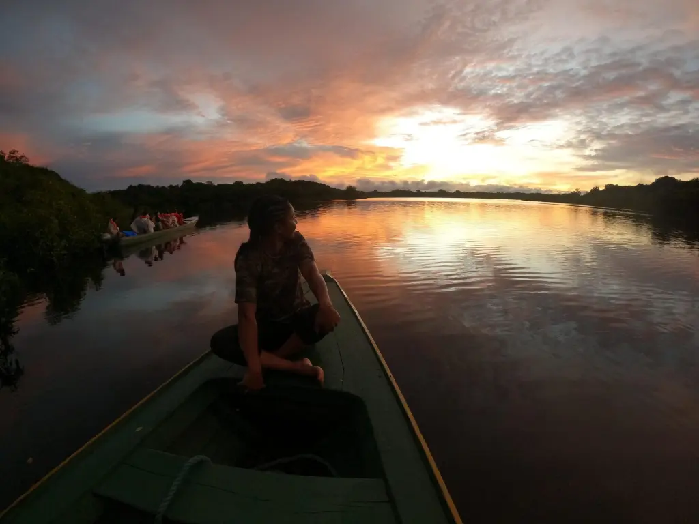

Volunturismo
Em Nhandereko, o volunturismo é uma experiência de imersão total na cultura Guarani, onde você pode participar de atividades diárias, aprender sobre seus saberes ancestrais e auxiliar em iniciativas que fortalecem a comunidade e preservam suas tradições.
O volunturismo é uma modalidade de viagem que combina turismo com trabalho voluntário. É uma oportunidade para vivenciar a cultura local de maneira mais profunda, contribuindo com projetos comunitários, ambientais ou sociais.